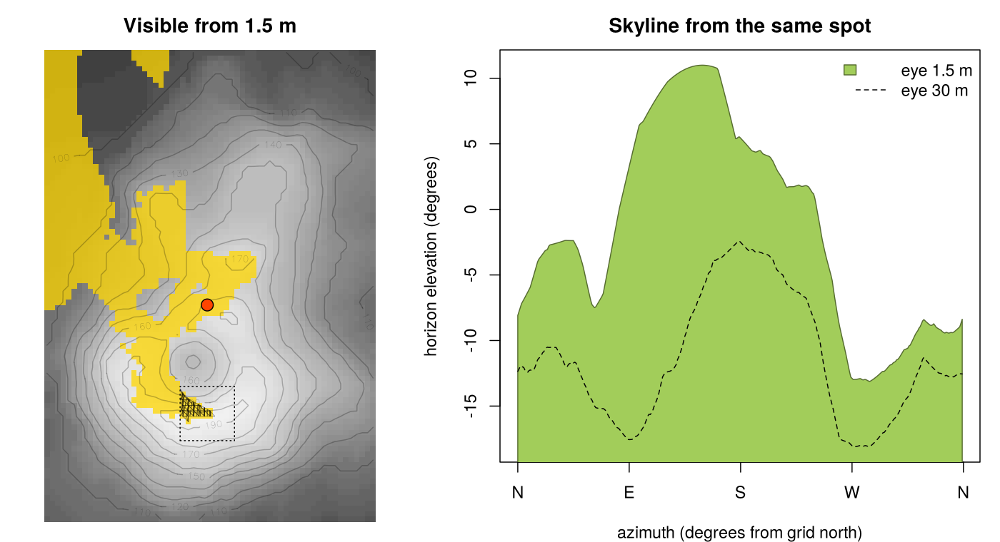
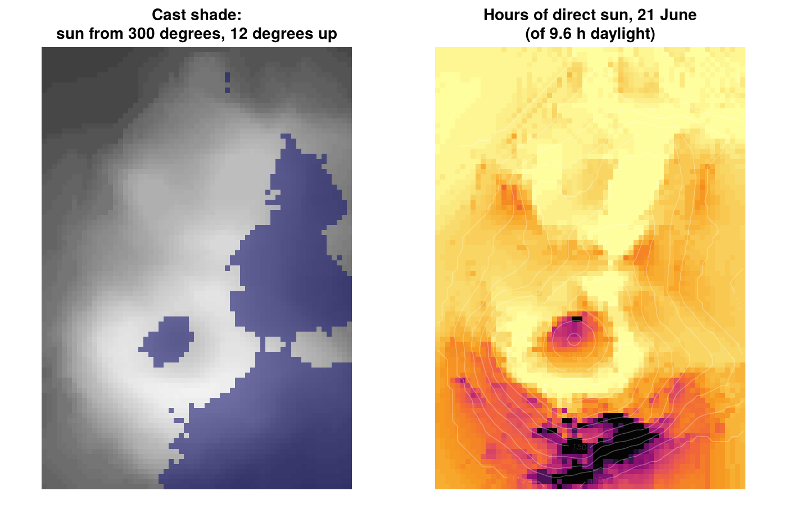

Cast shade and sight lines on terrain.
-
viewshed(): what can be seen from a point. It’s exact, on the terrain as triangles. You get the visible part of every triangle as a polygon, the visible fraction of each cell, and the skyline from the point.viewshed_mesh()does the same for any triangulation, in the front-to-back order frommesh_order(). -
cast_shade(): where the terrain shades itself for one sun position.sun_hours()gives the hours of direct sun over a day, andsun_position()where the sun is.
The work is done in Rust (the osvm crate, vendored in src/rust/osvm) through extendr. The same algorithms run in the browser in lunashade, a sun, shade and viewshed map for the Tasmania 2 m DEM. The two implementations are checked against each other and agree to the last digit.
Website: https://hypertidy.github.io/aspersions/, with a showcase on the Vestfold Hills in East Antarctica. It reads the Reference Elevation Model of Antarctica live through GDAL.
Installation
You need a Rust toolchain (cargo, rustc): see https://rustup.rs.
# install.packages("remotes")
remotes::install_github("hypertidy/aspersions")Grids
A grid is a matrix of heights with row 1 at the north edge. It needs square cells and an extent c(xmin, xmax, ymin, ymax) in a projected coordinate system in metres. The result of gdalraster::read_ds() works directly too, because it carries its own extent. Results come back in the same layout, ready for ximage.
The examples use volcano, georeferenced as in mdsumner/volcano: Maungawhau in Auckland, 10 m cells in the New Zealand Map Grid (EPSG:27200).
What can be seen from here
v <- viewshed(z, ex, c(2667700, 6479100), eye = 1.5)
v
#> <aspersions viewshed>
#> eye at (2667700.0, 6479100.0), height 175.0
#> visible: 85,110 m^2 from 1,848 of 10,320 triangles
#> 17.2% of the grid visible
#> 10071 visible pieces
#> skyline: -13.1 to 11.0 degrees
ximage(z, extent = ex, col = grey.colors(64), asp = 1)
ximage(v$visible, extent = v$extent, add = TRUE,
col = c("transparent", "gold"), breaks = c(-1, 0.01, 2))
v$pieces # the visible polygons: x, y, piece, triangle, ring
v$skyline # azimuth (from grid north) and elevation of the horizon
far and far_extent add a coarser grid around z for terrain further out. curvature = TRUE (the default) lowers distant terrain for the curve of the earth, with standard refraction.
Where the terrain shades itself
s <- cast_shade(z, ex, azimuth = 300, elevation = 12) # TRUE in shadow
h <- sun_hours(z, ex, "2026-06-21", lon = 174.764, lat = -36.876,
tz = "Pacific/Auckland", step = 5) # hours of direct sun
sun_position(as.POSIXct("2026-06-21 12:00", tz = "Pacific/Auckland"), 174.764, -36.876)
convergence corrects for a grid whose north isn’t true north. In polar stereographic, the grid azimuth of true north is the longitude: see the Vestfold Hills article.
From GDAL
library(gdalraster)
dsn <- "/vsicurl/https://raw.githubusercontent.com/mdsumner/rema-ovr/main/REMA-2m_dem_ovr.vrt"
set_config_option("AWS_NO_SIGN_REQUEST", "YES") # finer levels are in a public S3 bucket
tf <- tempfile(fileext = ".tif")
warp(dsn, tf, t_srs = "EPSG:3031",
cl_arg = c("-te", 2289000, 462000, 2330000, 503000, "-tr", 20, 20, "-r", "bilinear"))
ds <- new(GDALRaster, tf); d <- read_ds(ds); ds$close()
v <- viewshed(d, xy = c(2302286, 490792), eye = 10)
ximage(d, asp = 1); ximage(v$visible, extent = v$extent, add = TRUE,
col = c("transparent", "gold"), breaks = c(-1, 0.01, 2))How
Viewshed: an object-space visibility map.
- Around the eye there are four 90 degree wedges of azimuth. Each uses the central (gnomonic) projection, where straight edges stay straight, so a projected triangle is still a triangle.
- Triangles are visited front to back. On a grid, visiting quads in order of increasing row-plus-column offset from the eye is already a valid order, so there’s no sort. For any mesh, the order is a topological sort of one rule: across each shared edge, the triangle on the eye’s side goes first. Delaunay meshes never produce a cycle; other meshes can, so cycles are detected and counted.
- Per narrow sector of azimuth, the horizon is kept as a piecewise-linear upper envelope. A triangle is visible exactly where it rises above the horizon, which it then raises.
- The visible pieces map back to the ground as convex polygons. The horizon left at the end is the skyline.
Shade: one directional sweep per sun position, linear in the number of cells. A “shadow surface” is carried along the light’s direction, dropping by step * tan(elevation) per cell. A cell is in shadow where the surface arriving at it is above the ground.
There’s a longer write-up in lunashade’s docs/viewshed.md.
Status
Early. The interface may change.
- Terrain only: heights are bare ground, unless you pass a surface model.
- The viewshed answers “can I see the ground there”. It doesn’t yet answer whether a raised target at a height above the ground can be seen.
- Every grid cell becomes two triangles. Level of detail by angle seen from the eye, on an adaptive Delaunay mesh, is the next step.